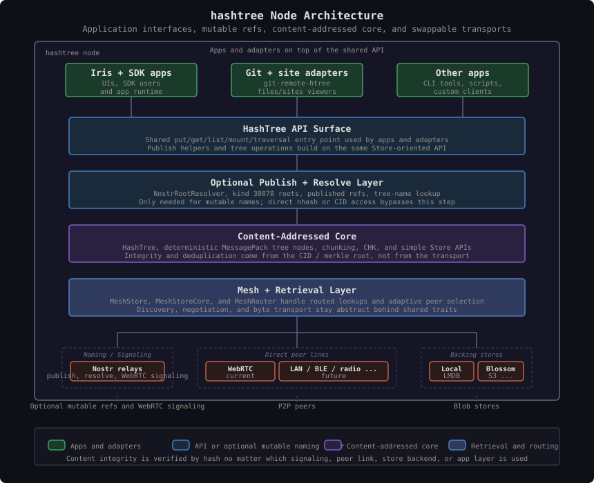
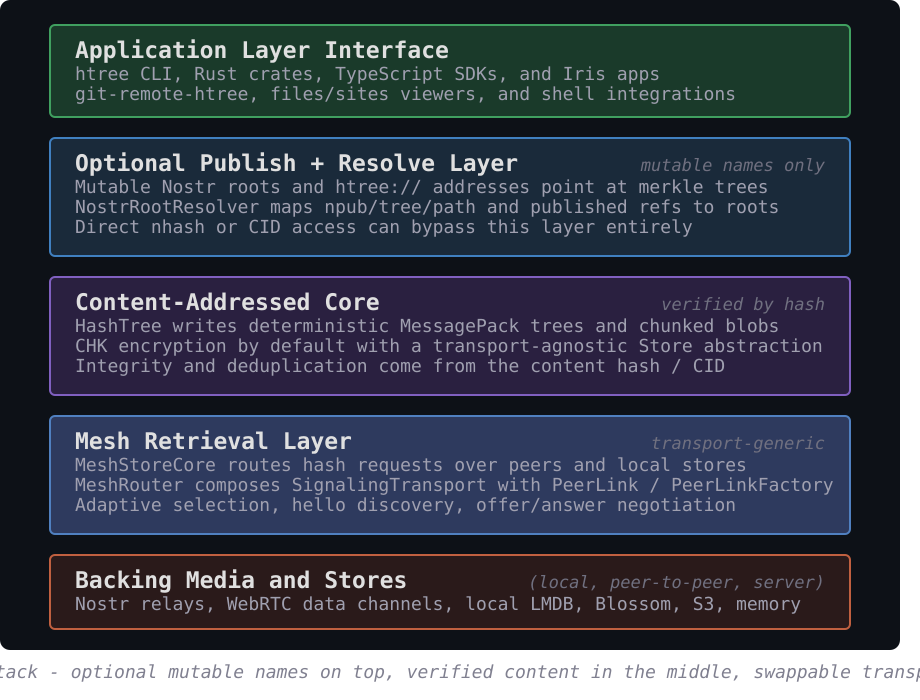

Names or direct IDs
Either mutable refs like npub/tree/path or direct nhash/CID links.
hashtree
Simple map of the current stack: apps can enter through mutable refs or directly through
nhash/CID links, the content core reads and writes by hash, and
the mesh layer routes requests through a transport-generic router that can swap signaling
and direct-link implementations underneath.
Either mutable refs like npub/tree/path or direct nhash/CID links.
NostrRootResolver is only needed for mutable refs; direct nhash skips it.
Immutable content IDs verify everything fetched from peers or servers.
Top-level consumers of the stack: htree, git-remote-htree,
files/sites viewers, Iris apps, and other custom apps.
Shared entry point used by those consumers: put, get,
traversal, mounting, and publish helpers built on the simple Store model.
HashTree, deterministic tree nodes, chunking, CHK, and content
addressing. Integrity comes from the CID / merkle root rather than the transport.
MeshStore, MeshStoreCore, and MeshRouter
handle routed lookups, discovery, negotiation, and transport-generic peer links.
Default production composition beneath the mesh router
SignalingTransport
Production uses NostrRelayTransport over relays for discovery and
offer/answer exchange.
PeerLinkFactory + PeerLink
Production uses WebRtcPeerLinkFactory and real WebRTC data channels for
peer-to-peer byte transport.
Local daemon storage answers first; peers, Blossom-compatible servers, and other store backends fill in what is missing.
These two diagrams show the hashtree node architecture and layer stack using the actual
current production composition. The mutable naming layer is marked optional because direct
nhash/CID access can bypass it entirely.


The current production pair is Nostr for signaling plus WebRTC for direct links. That
is the composition wired by the thin MeshStore wrapper in
hashtree-network.
The router and store core are intentionally generic. Nearby transports like Bluetooth, LAN buses, or simulation can plug in by implementing the same signaling and peer-link traits.
Requests are addressed by hash, so content fetched from relays, peers, or servers is verified locally. Mutable names only select roots; integrity still comes from content addressing.